https://webdemo.myscript.com/views/math/index.html#
高等数学
Advanced/Additional Higher Mathematics
这是:
你好哇！.我创建这个网页的目的是为了记录我的数学学习的心得，以及加固我对数学思维的过程，因为我写下的一切都是自以为是的当一名老师来讲，如果有幸被你看见，并从中得到一些收获，那么我会很开兴！
- 定义、性质、无穷小量、阶
- 计算
- 定义、性质、计算
- 计算、连续间断
- 定义
- 计算
- 几何意义
- 定义、计算
- 应用
- 定义、计算
- 定义、性质
- 计算、变限函数
- 基本概念、偏导数定义、计算
- 全微分、二元隐函数的计算
- 全微分、二元隐函数的计算
重要性
我列举了些最重要的基础，需要主要分配精力
数学工具
以下是数学学习中我用到的一些工具-

数学公式生成(哈哈，我做网页需要用到)
-

数学生成图像
https://www.geogebra.org/graphing?lang=zh_CN
-

文件转换工具(下的盗版书总得换个格式吧)
https://convertio.co/zh/我要占占占占占位置！！！
-

思维导图
https://wrq6.gitee.io/mind
-

Chatgpt 3.5 免费
https://chat.openai.com/
-

扇贝(Yep 学习数学别忘了学英语)
https://web.shanbay.com/web/main/index
系统学习目录
点击查看(目前暂未开发)- 全部
- 第一章:函数极限与连续
- 第二章:一元函数微分学
- 第三章:不定积分
- 第四章:定积分及其应用
- 第五章:常微分方程
- 第六章:中值定理
- 第七章:多元函数微分学
- 第八章:二重积分
- 第九章:无穷级数(数一、数三)

-
“这个世界没有什么可畏惧的，反正我们只来一次.”
朱德庸
-
“少年，山高路远，请去拥抱你的星辰大海.”
匿名
-
“如今谈笑风生之处,确实是我花了十几年才来到的.”
匿名
-
“没有比刚刚更让我体会到活着的感觉了.”
匿名
-
“我从来不屑于理解他们的处境,但是终究还是落在我的头上，如同一把利剑.”
匿名
-
“就是突然之间，鼻子一酸，眼眶一湿， 觉得自己什么都没有，觉得自己什么也做不好， 没有什么原因，就是突然的难过.”
网易云音乐热评 蔡健雅《达尔文 I》
-
“总是想留下些什么,但是又不知道有什么.”
匿名
-
“你很好！”
你
-
“无所谓、没必要、不至于，但真做不到，至少在我这岁数做不到”
匿名
-
“我没有开挂的人生,偶尔觉得自己还不错,的的确确念了许多年书,也去过一些地方,自以为是都看过许多星空,吃过辣到发麻的火锅,我的父母偶尔会理解我,我的朋友偶尔会照顾我,我有一些看似渺小的心愿,也偷偷在为它努力着.”
匿名
-
“因为我的胆怯,没能留住你,但是说真的,那天下午,你那摆摆手的姿态,让我感受到一个亭亭玉立的女孩在我目前向我招手，让我满心欢喜.”
匿名
-
“在我小时候喘不过气的别离,在我长大后依旧如此,但是吧,内心竟然掀不起从前的悸动了”
匿名
-
“我这一生,是献给宇宙的生命赞歌”
匿名
-
“请别在互联网上养成自己的三观”
匿名
-
“不瞒你说，昂贵的电脑到手的时候，小心翼翼的姿态，到后来时过境迁，竟懒的管了，只要没有大事，就让它该怎么样怎么样，但是偶尔想起，第一次见到它的时候的场景，我就想轻轻抚摸它”
匿名
-
0+
博士研究生 -
0+
硕士研究生 -
0+
普通本科生 -
0+
职业本专科生
个人学习笔记
点击就送-
February Feb, 二月 Illustrator
[考点]判断奇偶性:
1.定义域对称
2.
$$ f(-x)=-f(x) 奇函数$$
$$ f(-x)=f(x) 偶函数$$
[考点]判断奇偶性:
1.定义域对称
2.
$$ f(-x)=-f(x) 奇函数$$
$$ f(-x)=f(x) 偶函数$$
判断以下函数奇偶性
$$ f(x)=ln(x+\sqrt {{x}^{2}+1})) $$
这个函数定义域是有ln()主导的，内部需要大于0(为什么？对数函数的图像如下,自己动手)$$ \sqrt {{x}^{2}+1}一定>0且\sqrt {{x}^{2}+1}一定>x $$
$$ 即x\in R，定义域是对称的 $$
$$ f(-1)=ln(-x+\sqrt {{x}^{2}+1})) $$
$$ =ln\frac {(\sqrt {{x}^{2}+1}+x)(\sqrt {{x}^{2}+1}-x)} {(x+\sqrt {{x}^{2}+1})} 运用有理化$$
$$ =ln\frac {1} {\sqrt {{x}^{2}+1}+x} $$
$$ =-ln(\sqrt {{x}^{2}+1}+x) $$
显而易见，带入-x得到了-的函数值，是奇函数
-
April Apr, 四月 Branding
1.替换
2.讨论f(x)
$$ 设g(x)= $$
$$ 2-x\, \,\,\,\,\, x\leq 0 $$
$$ x+2\, \,\,\,\,\,\, x>0 $$
$$ 设f(x)= $$
$$ {x}^{2}\, \,\,\,\,\,\, x<0 $$
$$ -x\, \,\,\,\,\,\, x\geq 0 $$
$$ 故g[f(x)]为 $$______
就依它，我们就带入f(x)
$$ g(x)= $$
$$ 2-f(x)\, \,\,\,\,\,\, f(x)\leq 0 $$
$$ f(x)+2\, \,\,\,\,\,\, f(x)>0 $$
既然和f(x)有关，就画出f(x)图像
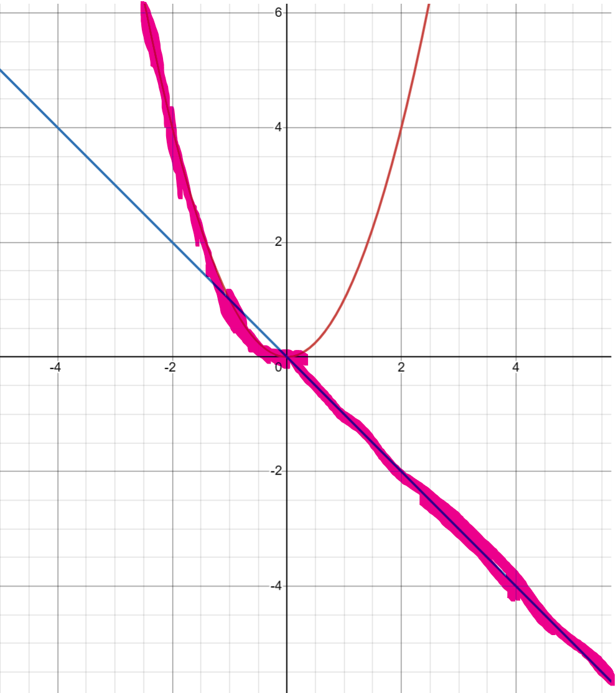注意f(x)是分段函数，因此是第二象限是曲，第四象限是直线
$$ 当x<0时\, \,\,\,\,\,\, f(x)>0 $$
$$ 当x\geq 0时\,\,\,\,\,\,\, f(x)\leq 0 $$
$$ 即g(f(x))= $$
$$ 2-f(x)\, \,\,\,\,\,\, x\geq 0 $$
$$ f(x)+2\, \,\,\,\,\,\, x<0 $$
再代入f(x)
$$ 即g(f(x))= $$
$$ 2+x\, \,\,\,\,\,\, x\geq 0 $$
$$ {x}^{2}+2\, \,\,\,\,\,\, x<0 $$
-
May May, 五月 Branding
1.无穷小的概念
2.等价无穷小的运用
3.高阶无穷小的运算法则
无穷小的定义
$$ {lim}_{x\to□ }f(x)=0,则f(x)在x\to□ 下为无穷小 $$
$$ {lim}_{x\to□ }f(x)=0,{lim}_{x\to□ }g(x)=0 则$$
$$ {lim}_{x\to□ }\frac {f(x)} {g(x)}= $$
0 f(x)是g(x)的高阶无穷小
1 f(x)是g(x)的等价阶无穷小
∞ f(x)是g(x)的低阶无穷小
A(A≠0,1) f(x)是g(x)的同阶无穷小
f(x)是g(x)的高阶无穷小一般就写作，没错就是你想破头想不出来的东西
f(x) = ◯[g(x)]
◯其实就是英文单词over，超过的意思，读作奥密克戎(我知道你想到了什么，没错就是同一个代名词)
这里面最特殊的就是等价无穷小，说直白点就是考极限的时候代换求解
[重点]等价无穷小的代换方法
乘除法可用
加减法法慎用
$$ 若f ∽ A,g ∽ B且{lim}_{x\to□ }\frac {f} {g}={lim}_{x\to□ }\frac {A} {B}≠-1时 $$
$$ f+g ∽ A+B $$
无穷小 × 有界 = 无穷小
无穷大 × 有界 ≠ 无穷大
[重点]无穷小要有阶的感觉
无穷小的阶(阶也就是你的幂,也就是指数是多少，指数就是几次方的意思，哈哈哈套娃解释)
$$ x\to 0,f(x)∽A{x}^{n}(A≠0) $$
上面的意思就是f(x)为x的n阶无穷小(不用过度解读,不用问为什么一个函数为什么能等价于一个代数式，这就是抽象)
你看$$ 1-cosx∽\frac {1} {2}{x}^{2}\to 2阶无穷小 $$
[黄金重点]合取低阶原则(有限个无穷小相加减)
$$ 若{lim}_{x\to□ }α(x)=0,{β}_{i}(x)=◯[α(x)] $$
$$则\, α(x)+{β}_{1}(x)+{β}_{2}(x)+...+{β}_{n}(x)∽ α(x)$$
别慌啊，看到这里就劝退了？仔细看，第一句话写的是函数趋向一个值的时候极限值是0
其次就是$${β}_{i}(x)是α(x)的高阶无穷小$$
还知道什么叫高阶无穷小吗，就是两个函数作比，值为0的叫高阶无穷小
为什么是等于0，因为在这个趋向下分子比分母更先一步到达0(好好体会这句话哟)
好，既然我们知道了，α(x)在某种程度上比β(x)更慢(趋向0的速度)，因为β(x)是α(x)的高阶无穷小嘛
也就是说，我们如果去观察一个加减法的表达式中，这个表达式的走向取决于谁？是其中最快的？最慢的？
当然是最慢的了，说到这个我就想到了当初学《软件工程》时，里面的有个是画图替还是什么，工程的总工期是取决于最长的一个工期
不知道你有没有听明白，这样吧，就是你送外卖，你有5单，根据系统优化，你只会走一条路就把5个单送完
那你这次送外卖的时长取决于什么？当然是到达最远的那个的时候啊
ok,扯远了，既然α(x)趋向的速度是最慢的，那他就可以代表整个式子的“运动轨迹”
所以我们就可以说整个式子是∽α(x)(读作“等价于α(x)”)
$$例：若{lim}_{x\to0}\frac {atanx+b(1-cosx)} {cln(1-2x)+d(1-{e}^{{-x}^{2}})}=2 其中 {a}^{2}+{c}^{2}≠0，则必有$$
A.b=4d
B.b=-4d
C.a=4c
D.a=-4c
$$ 当x\to 0时，我们观察分子 $$
我们知道，加减法是和取低阶
$$ atanx中的tanx∽x 是一阶的，我们是可以忽略常数的(反正我们也不进行运算)$$
$$ b(1-cosx)中的1-cosx∽\frac {1} {2}{x}^{2} 是二阶$$
我们进行和取低阶，就是取一阶的式子，于是分子就变成了
$$ atanx $$
$$ 当x\to 0时，我们观察分母 $$
$$ cln(1-2x)中的ln(1-2x)∽-2x,是一阶的$$
$$ d(1-{e}^{{-x}^{2}}) 中的1-{e}^{{-x}^{2}}∽-{x}^{-2}，是2阶的$$
我们进行和取低阶，就是取一阶的式子，于是分子就变成了
$$ cln(1-2x) $$
现在式子就变成了
$${lim}_{x\to0}\frac {atanx} {cln(1-2x)}={lim}_{x\to 0}\frac {ax} {c(-2x)}=\frac {a} {-2c}=2$$
$$即a=-4c$$
等价无穷小的充分必要条件
$$ f(x)\, =g(x)+O[g(x)]\leftrightarrow f(x)∽ g(x) $$
换成人话就是要想等价，就需要让其中一个式子等于另一个式子加上它的高阶无穷小
高阶无穷小的运算法则
1.加减低阶吸收原则
$$ O({x}^{m})\mp O({x}^{n})=O({x}^{l}),l\in min(m,n) $$
2.乘法叠加原则
$$ O({x}^{m})\cdot O({x}^{n})=O({x}^{m+n}) $$
$$ {x}^{m}\cdot O({x}^{n})=O({x}^{m+n}) $$
3.数乘无关原则
$$ k\cdot O({x}^{n})=O({k\cdot x}^{n})=O({x}^{n})//k≠0 $$
-
June Jun, 六月 Branding
1.泰勒公式
2.泰勒公式的用法
3.上下同阶原则(经验原则)
普通泰勒公式一共八个，我扩展到十个，其次有的后面直接加了大O阶，也就是x的最高次数的高阶无穷小，是因为这个泰勒无规律可言，其他的需要你在写到哪一阶就加上哪一阶的高阶无穷小
$$ sinx=x+\frac {{(-1)}^{n}{x}^{2n+1}} {(2n+1)!} $$
$$ tanx=x+\frac {1} {3}{x}^{3}+O({x}^{3}) $$
$$ arcsinx=x+\frac {1} {6}{x}^{3}+O({x}^{3}) $$
$$ arctanx=x+\frac {{(-1)}^{n}{x}^{2n+1}} {2n+1} $$
$$ cosx=1+\frac {{(-1)}^{n}{x}^{2n}} {(2n)!} $$
$$ ln(x+1)=x+\frac {{(-1)}^{n}{x}^{n+1}} {n+1} $$
$$ {a}^{x}=1+\frac {{(xlna)}^{n}} {n!} $$
$$ {(x+1)}^{α }=1+\frac {(α -n+1){x}^{n}} {n!} $$
$$ \frac {1} {x+1}=1+{(-1)}^{n}{x}^{n} $$
$$ \frac {1} {x-1}=1+{x}^{n} $$
人难我难我不畏难，人易我易我不大意
一天一条，包括复习之前背的，像我这样脑子不好的，一个星期也能背的滚瓜烂熟，不骗你，时间真的能改变任何东西
[考点]泰勒公式的用法(展开原则)
原则一：相消不为0
例题$$ x\to 0,tanx-sinx∽\_\_\_\_$$
$$ tanx-sinx=[x+\_ \_ \_ \_ \_ ]-[x+\_ \_ \_ \_ \_ ] $$
注意了，泰勒是等号，是我们数学中传统意义上的等号,接下来我们先展第一项
$$ tanx-sinx=[x+\frac {1} {3}{x}^{3}+\_ \_ \_ \_ \_ ]-[x+(-\frac {1} {6}{x}^{3})+\_ \_ \_ \_ \_ ] $$
好了，这个时候，我们看到如果展开做运算是不会导致式子的结果为0的，于是我们加上各自的高阶无穷小
$$ tanx-sinx=[x+\frac {1} {3}{x}^{3}+O({x}^{3})]-[x+(-\frac {1} {6}{x}^{3})+O({x}^{3})] $$
小学题做运算
$$ tanx-sinx=\frac {1} {2}{x}^{3}+O({x}^{3})-O({x}^{3}) $$
等价无穷小的运算中的加减低阶吸收原则即：$$ tanx-sinx=\frac {1} {2}{x}^{3}+O({x}^{3}) $$
根据等价无穷小的必要条件，a式子=b式子加上它的高阶无穷小，那么这个a式子与b式子等价,那你可能会问了，明明高阶无穷小里面没有系数啊，那么还有一个运算规则你没有掌握就是数乘无关原则
即$$ tanx-sinx∽ \frac {1} {2}{x}^{3} $$
-
August Aut, 七月 Branding
1.定义
2.性质
3.无穷小量
4.函数极限的计算
5.六种未定式的相关问题
$$还记得我们之前的函数极限的定义吧？对于一个任意大于0的数，当x趋向x_{0}时f(x)与A的距离比这个数还小$$
$$具体的式子就是 {lim}_{x\to {x}_{0}}f(x)=A $$
$$极限中的 x\to {x}_{0}表达的是什么意思 $$
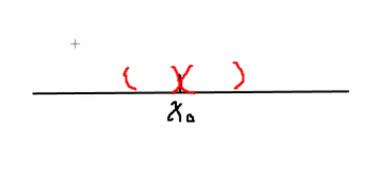
没错，就是从两边趋向于这个点，注意是两边，你说为什么不从上下360°螺旋趋向,我会告诉你，x是x轴上的点，x轴是横线
去心邻域
函数极限的存在性与该点函数值无关
极限要存在，必须保证在趋向过程中处处有定义
没事这两条，我到现在也没有理解透彻，什么时候透彻了再更新
函数极限性质
1.唯一性
2.局部有界性
我来一个个解释一下，唯一性，极限趋向到这个点，这个点，好吧，我也不知道，好像就是这样，学艺不精啊
局部有界性:函数在趋向一点的时候，值为一个常数，就说明这个函数在这个趋向时，函数是有界的，记住是在这个趋向的范围，而不是整个定义域
若函数在趋向一点的时候函数值为∞，那么函数在这个趋向范围时是无界的
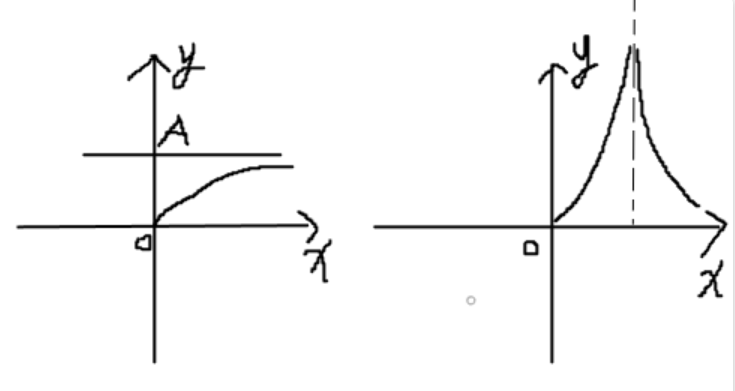
看不懂？没关系，算了。反正我一开始也不理解，睡一觉就过去了，脑子是我们身体最宝贵的，对它好点哦！
局部保号性
$$ 若{lim}_{x\to {x}_{0}}f(x)>0,则在x\to {x}_{0}时,f(x)>0 $$
$$ 若{lim}_{x\to {x}_{0}}f(x)<0,则在x\to {x}_{0}时,f(x)<0 $$
怎么，上面这一条是不是被你大脑自动略过了？瞧瞧，啧啧，和我大脑一样啊，趋利避害啊
啊啊啊啊，要长脑子啦，好啦，上面这两条挺重要的，挺简单的，你只要明白了局部有界性，这个记起来就是顺水推舟
我也想解释啊哥们，函数趋向这点的时候函数值是大于0的，那就是说在这个趋向下，函数值就是大于0的，也就是领域内大于0
我一开始挺不理解的，你说吧，极限趋向大于0，我能理解，你说两旁也大于0，凭什么？
因为你有点本末倒置了，真的，极限是什么？极限是无限趋向，不是本身，我无限相当于中国首富，可我是首富吗？我不是啊，你的前提我无限相当于首富，不就是在这个无限之中是首富嘛，是你告诉的条件就是答案罢了，就是把你给的条件换了句话罢了
ok，被我绕晕了吧，看下图
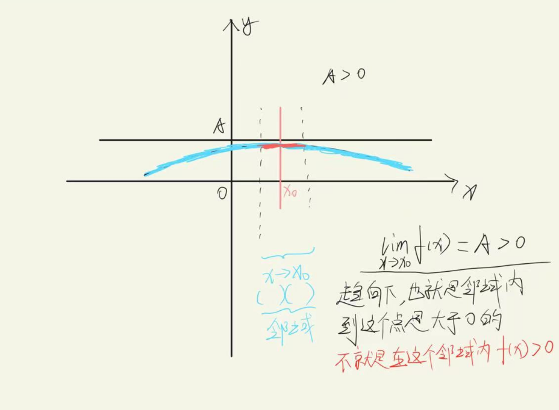
还看不懂？算了算了，我累了，先隔这吧，你学完了，在某一天想念我(保号性)了，再来养老院看看我吧
保号性的推广
$$ 若{lim}_{x\to {x}_{0}}f(x)>A,则在x\to {x}_{0}时f(x)>A $$
$$ 若{lim}_{x\to {x}_{0}}f(x)< A,则在x\to {x}_{0}时f(x)< A $$
$$ 若{lim}_{x\to {x}_{0}}f(x)>{lim}_{x\to {x}_{0}}g(x),则在x\to {x}_{0}时f(x)>g(x) $$
$$ 若{lim}_{x\to {x}_{0}}f(x)<{lim}_{x\to {x}_{0}}g(x),则在x\to {x}_{0}时f(x)< g(x) $$
[考点]无穷小量
$$ 若{lim}_{x\to□ }f(x)=0,则称f(x)在x\to□ 下，为无穷小量 $$
如果你现在认真的看，你就会想，这不就是极限为0的就是无穷小量嘛，唉，真为你学习能力担心啊，无穷小量是是一个趋向过程中的一个量，无穷小量必须和自变量的趋向挂钩
你可能会问：不应该是-∞才是无穷小吗，no，这叫无穷大，无穷大的定义：绝对值大于任何数的函数
无穷小量 × 有界函数 = 无穷小量
无穷大量 × 有界函数 很遗憾，未知
洛必达
$$ {lim}_{x\to□ }\frac {f(x)} {g(x)}={lim}_{x\to□ }\frac {f'(x)} {g'(x)} $$
没错啊，就是上下分别求导，等号告诉你什么情况下可以使用
极限四则运算(无限项不可用\并且都存在才可拆)
$$ lim[f(x)±g(x)]=limf(x)±limg(x) $$
$$ lim[f(x)g(x)]=limf(x)\cdot limg(x) $$
$$ lim\frac {f(x)} {g(x)}=\frac {limf(x)} {limg(x)} $$
非零因子可淡化(乘除法中非零项可以先算)
$$ {lim}_{x\to 0}\frac {{e}^{x}\cdot ()\cdot ()} {()\cdot ()\cdot ()}//{e}^{x}可以先算成1 $$
你要是问我为什么算成1，我就要炸锅了，哥们，e的0次方是不是1，你丫的
幂指转换
$${lim}_{x\to□ }{底}^{幂}={e}^{{lim}_{x\to }幂\cdot (底-1)} 在{1}^{∞}可用$$
$$lim{u}^{v}={e}^{limvlnu}在{0}^{0}或者{∞}^{0}可用$$
提矛法
$$ 例：求极限{lim}_{x\to ∞}[x-{x}^{2}ln(1+\frac {1} {x})] $$
$$ 其中{x}^{2}最大，提出去 $$
$$ 即{lim}_{x\to ∞}{x}^{2}[\frac {1} {x}-ln(1+\frac {1} {x})] $$
$$联想等价无穷小 x-ln(x+1)∽\frac 1 {2}{x}^{2} 可以把x换成1/x$$
$$ {lim}_{x\to ∞}{x}^{2}\cdot \frac {1} {2}{(\frac {1} {x})}^{2}=\frac {1} {2} $$
抓大头
类似我们之前的无穷小的时候合取低阶原则，不过！！！你注意了，这个是无穷大，在无穷大中，只取高阶的，也就是分子分母中都取最高阶的来计算就行
[黄金考点]七种未定式的极限计算(先定型，后定法，定法之前先四化)
定型
$$未定式:\frac {0} {0}、\frac {∞} {∞}、0\cdot ∞、∞-∞、{1}^{∞}、{∞}^{0}、{0}^{0}$$
已定式:直接带入求值。//什么是已定式？我勒个老天爷，就是小学数学题，把趋向的那个值带进去不违反你到现在所学的数学规律得出一个常数就是这个极限的值，还不懂？算了算了先学吧
四化
1.非零因子要淡化
2.加减法中存在项可拆化
3.见到根式大概率就是有理化
4.幂指函数使用幂指转换
定法
1.等价无穷小
2.泰勒
3.洛必达
4.极限四则运算
$$\frac {0} {0}$$
1.等价无穷小
2.泰勒(只要等价无穷小，拼了命也想不出来等价的东西，优先泰勒)
3.洛必达(只要函数看起来导数好算就优先)
4.极限四则运算
$$ ∞ - ∞$$
1.通分
$$令x=\frac {1} {t}$$
3.提矛法
4.极限四则运算
$$\frac {∞} {∞}$$
1.洛必达
2.抓大头
$${1}^{∞}$$
1.幂指转换
$$0\cdot ∞$$
转化为：
$$\frac {0} {\frac {1} {∞}}=\frac {0} {0}$$
$$ \frac {∞} {\frac {1} {0}}=\frac {∞} {∞} $$
$$ {e}^{f}-{e}^{g} $$
变成
$$ {e}^{g}[{e}^{f-g}-1] $$
左右开弓法求极限
$$ {lim}_{x\to {x}_{0}}f(x)=a\leftrightarrow {lim}_{x\to {x}^{+}_{0}}f(x)={lim}_{x\to {x}^{-}_{0}}f(x)=a $$
$$ {lim}_{x\to ∞}f(x)=a\leftrightarrow {lim}_{x\to {∞}^{+}}f(x)={lim}_{x\to {∞}^{-}}f(x)=a $$
需要分左右极限的几种形式
$$1. {e}^{∞} $$
$$2. arctanx $$
$$3. |*|\, 且*\to 0 $$
$$4. [x]且x\to 2,[]是指不超过x的最大整数 $$
5.分段函数
-
August Aug, 八月 Branding
1.数列极限的性质
2.数列极限的计算
3.数列极限的有界性和单调性的证明(难点)
数列极限仅有一种趋向(别喷我，我目前的考研水平就只要求我这样学)，就是n→∞(正无穷)
$$ {lim}_{n\to ∞}{x}_{n}= $$
$$ A\to [{x}_{n}]收敛于A $$
$$ 不存在\to [{x}_{n}]发散 $$
不知道你有没有体会到数列极限和普通的极限的区别，趋向的变量成了n，n不在是唯一影响结果的东西，就是说，这个极限是有无数项的自变量x，组成的，每一个n仅能影响它挂上的那个x，其实你可以这样来看待数列极限
数列性质
1.唯一性
2.有界性
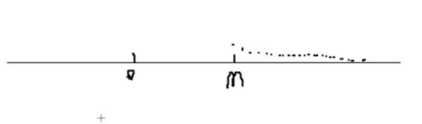
就是从m项的Xm开始，每一个x都无限等同于A，还是补充一句，等同不是说就是A。其次我估计你看上面的图，可能会有一个疑问，就是x轴上的点一直向右边移动，A在哪里啊，A不应该是一条垂直的线隔断吗？很好，和我一样聪明，你看看这个轴线，代表的是增量n，而不是下标为n的X的值。这是数列，懂吗，是无数个数组成的，这轴线是代表人数，不是人的身高
[总结]收敛数列和子数列之间的关系
[Xn]收敛于A→所有的子数列收敛于A|还记得什么叫收敛吗？就是一个极限数列从某个数开始就无限接近于A，就是收敛于A，如果这个极限什么也不趋向，就是发散。
$$ 若{lim}_{n\to ∞}{x}_{n}=A,\, 则数列\{ {x}_{n}\} 有界 $$
$$ 若{lim}_{n\to ∞}{x}_{n}=∞,\, 则数列\{ {x}_{n}\} 无界 $$
局部保号性
$$ {lim}_{n\to ∞}{x}_{n}>{lim}_{n\to ∞}{y}_{n} $$
以上式子只能说明在某个n往后，我比你大，而不能说明我一直比你大
[类型题一：同函数极限计算]
$$ {lim}_{x\to ∞}(1+x)(1+{x}^{2})(1+{x}^{4})...(1+{x}^{{2}^{n}}) 注意：0< x <1$$
伟人说过，系好第一颗扣子至关重要的，拿到题目，先被恶心，再被人的本性折磨，我想大概率你会慌了阵脚。但是请别慌，请立马撕掉试卷回寝室睡觉。
好，正经一下，我们继续，这一步挺重要的，就是，我们要将无限项的式子计算，在目前的水平来讲，是有可能的，伟大的人说过只要努力，万事皆有可能。但是我不想，我是个普普通通的人
我比较懒，我背公式得都背一个通用的公式，那这道题我们也可以想办法化成一个式子，怎么化？
$$ {lim\, }_{n\to ∞}\frac {(1-x)(1+x)(1+{x}^{2})(1+{x}^{4})...(1+{x}^{{2}^{n}})} {1-x} $$
这一步很妙啊，我们观察分母，1-x和1+x会成为一系列的连锁反映啊，别觉得自己不会，现在不就会了，开锁的师傅都得开无数个门才成为开锁师傅的呢😨
$$ {lim}_{n\to ∞}\frac {1-{x}^{{2}^{n+1}}} {1-x}=\frac {1} {1-x} $$
你可能会好奇，为什么分母变成1了，先等等我要提醒你x是已知数，这不是关于x的极限。其次我们再来解释，看题目给出0< x <1
$$ {lim}_{n\to ∞}{2}^{n+1}=∞\to {lim}_{n\to ∞}{x}^{{2}^{n+1}}=0 $$
没看懂？这是什么原理？你可以将1/2无数次的乘上它本身，看是不是越来越小
[类型题二：连续化处理，换成函数极限(也叫海涅定理/归结原理)]
当你的数列极限需要使用函数极限中求极限的办法，就像洛必达这种，数列极限是不允许使用洛必达的，因为数列不可导，因为数列是一系列连续的点，而不是连续不断的。
$$ {lim}_{n\to ∞}\frac {3n} {{e}^{n}+2n} $$
$$ 连续化为{lim}_{x\to ∞}\frac {3x} {{e}^{x}+2x} =0$$
显然分母比分子大太多，值就是0
$$即 {lim}_{n\to ∞}\frac {3n} {{e}^{n}+2n} =0 $$
[类型题三：夹逼准则]
我知道，这个模块让人浑身一抖，我说实话，我也是至高中多年以来，才渐渐体会到这种方法。
$$ 若{y}_{n}\leq {x}_{n}\leq {z}_{n}且{lim}_{n\to ∞}{y}_{n}={lim}_{n\to ∞}{z}_{n}=A,则{lim}_{x\to ∞}{x}_{n}=A $$
我知道这很难，我也知道，你的大脑会自动的掠过很多信息，直到你看见自己最喜爱的中文，但是学习数学就是这样，不断的折磨自己，达到自己从未到达的高度
好了，言归正传，其实如果你认真的看一遍这个定义就会发现这个定义说了一个很简单的事情
如果一个数列介于A与B数列之间
分别求A和B数列的极限，如果都相等并且等于一个值
那么，夹在中间的数列的极限也应该是这个数
如果看着中文都不能理解，也是正常的，因为我们习惯具体的东西，而不是抽象的
我们经常说，计算机面向对象的语言，抽象的更符合人类的思维方式，其实也不全是，抽象更重要的是模仿大自然的鬼斧神工，就像你所看见所有的人类的科技，几乎都是模仿生物的特性。具体什么，我也不说了，因为我瞎说的
既然中间是我们要求的数列极限，那么A和B必定一个大一个小，这就叫缩小和放大，而且这种缩小和放大要巧，而且要有理
好了，现在的要求就是你对夹逼有个初步的认识，并且有一个大概的想法就行了，不至于在未来的某一天看见了，不知道这种是夹逼
[类型题四：单调有界必有极限]重点，难点
单调有界必有极限的内容
∃N>0,当n>N时//∃是意思是“存在”
1.若[Xn]单调递增，且有上界
2.若[Xn]单调递减，且有下界
$$则称 {lim}_{x\to ∞}{x}_{n} 存在$$
数学归纳法的复习
1.验证第一项成立
2.假设第n项时，成立
3.推断出第n+1项成立
则均成立
证明单调性：这件事情，可以作比，你想单调递增是不是后面比前面大，比值大于1就说明递增。其次也可以做差，后面见前面的是正的不就说明递增嘛
$$[例题] 设{x}_{1}=10,{x}_{n+1}=\sqrt {{x}_{n}+6},n=1,2,.....证明数列\{ {x}_{n}\} 有极限，并求此极限 $$
(草稿上写出)
$$ 设{lim}_{n\to ∞}{x}_{n}=A,可以推出{lim}_{n\to ∞}{x}_{n+1}=A $$
$$ \, 即{lim}_{n\to ∞}{x}_{n+1}={lim}_{n\to ∞}\sqrt {{x}_{n}+6}即A=\sqrt {A+6} $$
$$ {A}^{2}-A-6=0\to A=3或-2 $$
$$ 又{x}_{n+1}>0,即A>0，因此A=3 $$
1.我们来证明有界性
$$ 猜测{x}_{n}>3(n=1,2,3...) $$
为什么猜测这数，上面我们不是求出极限是3嘛，那为什么不是4，不是小于3，因为第一项是10啊，其次数列极限是无限接近的结果
$$ 当n=1时,{x}_{1}=10>3成立 $$
$$ 假设当n=k时, {x}_{k}>3成立$$
$$可知{x}_{k+1}=\sqrt {{x}_{k}+6}\to \sqrt {{x}_{k}+6}>3$$
$$ 即{x}_{k+1}>3成立 $$
$$ 则{x}_{n}>3(n=1,2,3...) $$
OK了，下界已经证明存在了
2.证明单调性
$$ {x}_{n+1}=\sqrt {6+{x}_{n}} $$
$$ 作比\frac {{x}_{n+1}} {{x}_{n}}=\frac {\sqrt {6+{x}_{n}}} {{x}_{n}}=\frac {1} {\sqrt {{x}_{n}}}\cdot \sqrt {\frac {6+{x}_{n}} {{x}_{n}}} $$
$$ =\frac {1} {\sqrt {{x}_{n}}}\cdot \sqrt {\frac {6} {{x}_{n}}+1} $$
$$ 我们带入{x}_{n}=3 $$
$$ =\frac {1} {\sqrt {3}}\cdot \sqrt {3}=1 $$
$$ s注意，{x}_{n}\, >3的，是极限等于3.也就是 $$
$$ \frac {1} {\sqrt {{x}_{n}}}\cdot \sqrt {\frac {6} {{x}_{n}}+1}<1 $$
$$ 则{x}_{n+1}<{x}_{n}\to 数列极限[{x}_{n}]单调递减 $$
根据我们《单调有界必有极限》可知，数列单调递减，并且有下界的时候，数列存在。
另一种是单调递增，并且有上界才有极限
[重要不等式]
$$ a+b\geq 2\sqrt {ab} $$
$$ 当0< x <\frac {Π} {2}时,tanx> x >sinx 那个Π是是派，不是蛋黄派，是3.1415...的派$$
$$ 当x>0是,x>sinx,当x<0,sinx>x $$
$$ {e}^{x}-1\geq x $$
$$ \frac {1} {1+x}< ln(1+\frac {1} {x})<\frac {1} {x} $$
$$ \frac {x} {1+x}< ln(1+x)< x $$
$$ x\geq ln(x+1) $$
$$ {lim}_{n\to ∞}\sqrt[{n}] {{a}^{n}+{b}^{n}+{c}^{n}}=max(a,b,c)//(a>0,b>0,c>0) $$
$$ {lim}_{n\to ∞}\sqrt[{n}] {a}=1 $$
$$ {lim}_{n\to ∞}\sqrt[{n}] {n}=1 $$
-
September Sep, 九月 Branding
导数的有关重难点
微分的有关问题
导数的微分学应用
导数的有关重难点
1.导数的定义
我想这应该是噩梦了，我记得我第一次学导数定义的时候，就是一上来将一个物理中的什么平均速率和瞬时变化率，人都傻了，但是没办法，今天我还得这样将，怎么样，是不是很贱🤣🤣
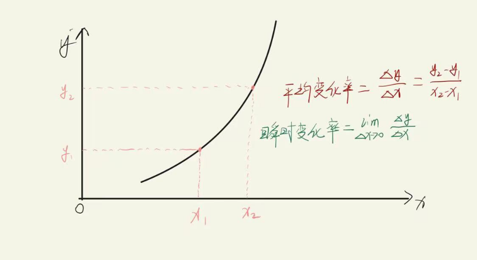
别急┗|｀O′|┛ 嗷~~，请抬起你那珍贵的眼睛，瞟一下坐标图，平均变化率这样子求，估计很懵，但是你如果把x当成时间来看就可以了
其实也没有什么难以理解的地方。真的。瞬时变化率，不就是字面意思，把时间取的很小，很小的时候就是瞬时变化率了
数学中，将瞬时变化率称为导数
不知道你有没有思考过，一个问题，就是我们说瞬时变化率啊，是取的时间很短，那是不是就是意味着，取得这个时间就是一个点，例如7点到8点之间。我们取瞬时变化率，我们取了7点30分，刚好就是30分这个整点，没有间隔。在数轴上也就是X₀这种点，而不是一段距离了
导数也是切线斜率
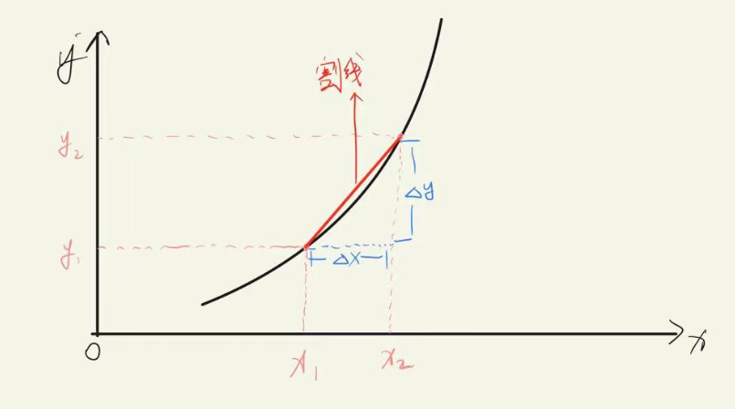
斜率(角系数)就是一条直线（或曲线的切线）关于（横）坐标轴倾斜程度的量。通常用直线（或曲线的切线）与（横）坐标轴夹角的正切，或两点的纵坐标之差与横坐标之差的比来表示。
上面那长条话语一定让你心生厌恶了吧哈哈哈哈，简单来讲，斜率就是倾斜的角度，以及比率。用y轴的做差比上x轴的做差就是斜率
$$ \frac {∆y} {∆x} $$
好，有没有发现我在图中写的是割线，上面这个式子也是求的割线斜率，那导数是切线斜率，切线和割线分别是什么东西？看下面两幅图
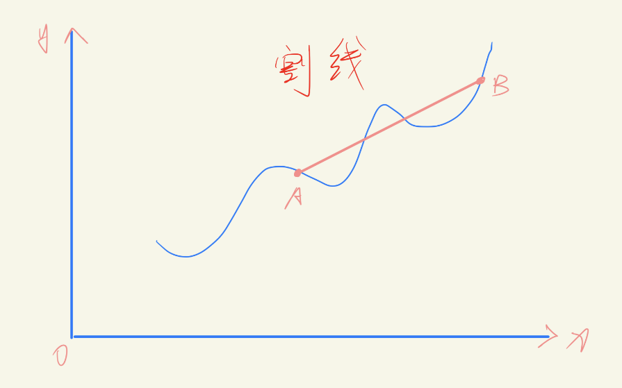 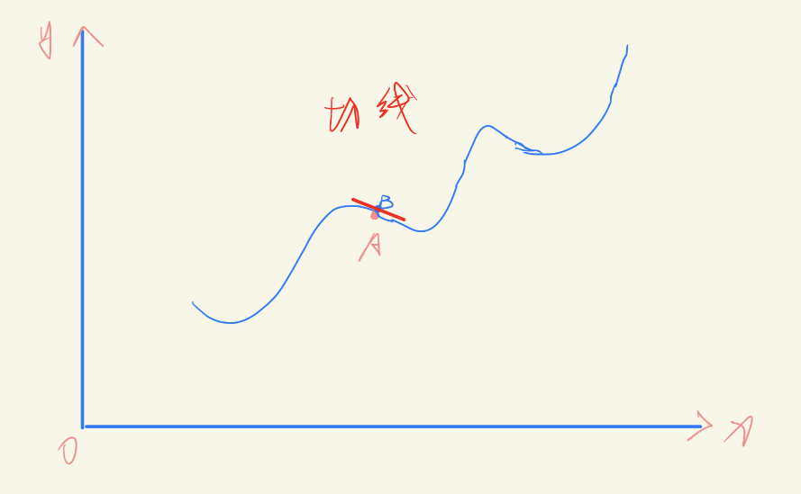
嘿嘿，算我求求你了，学知识的时候带点脑子，认真点，别囫囵吞枣，割线你瞧，就是曲线上两个点的连线，中间可以有多个交点
你再看切线，就是当两个点无限的接近，两点的连线就是一个点的时候，也就是曲线的切线，就是曲线在这个点处的切线
既然如此，切线斜率不就是当∆x无限小的时候吗，也就是趋向0的时候，于是我们定义
$$k= f'(x)={lim}_{∆x\to 0}\frac {∆y} {∆x} $$
k就是切线的斜率，也就是此点的导数
$$1.核心定义 f'(x_0)={lim}_{∆x\to 0}\frac {∆y} {∆x} $$
$$2.增量定义 f'({x}_{0})={lim}_{∆x\to 0}\frac {f({x}_{0}+∆x)-f({x}_{0})} {∆x} $$
$$3.计算型定义 f'({x}_{0})={lim}_{x\to {x}_{0}}\frac {f(x)-f({x}_{0})} {x-{x}_{0}} $$
[定势思维]分段函数在分段处求导，用导数定义，在分段点外求导直接求。
分段函数有很直接的，还有隐式的如：max，min,|x|,[x]//最后这个是指不大于x的最大整数
接下来我们讨论，困扰当初我很长时间的一件事情：可导必连续，连续不一定可导.你觉得这句话对吗？
ok，我当初在网络上看见有一幅图，就是一排电动车怎么怎么之类的。无所谓了，我是old man了我知道。
我们来回顾一下可导，就是导数存在，也就是这一点是存在导数值的。也就是这个曲线在这个点是有斜率的，那不就是连续嘛(如果你没有理解，很好，因为我是瞎说的)
我们来看连续不一定可导。我们来看一个函数
$$ f(x)={x}^{\frac {1} {3}} $$
连续的规则就是极限就是函数值，这个函数在0点的函数值为0，没问题吧？
$$ {lim}_{∆x\to 0}\frac {f(∆x+0)-f(0)} {∆x}= $$
我们带入计算一下
$$ {lim}_{∆x\to 0}\frac {{∆x}^{\frac {1} {3}}} {∆x}= $$
还记得无穷小量的计算吧，上面的1/3阶，下面是1阶，下面阶大也就是值为∞，注意了这是比的是分子分母趋向到0的速度，下面的趋向的快也就是分母第一步到0，而且上面的此时没有到0，那不就是无穷大了
∞是一个未定值
也就是这个点处的极限值不等于函数在这一点的值，也就是说，此点连续，但是导数是不存在的。完蛋了，我已经有点把自己搞懵了，连续是此点极限等于函数值，可导是左右导数存在并且相等，我证半天，算出导数不存在也不等于函数值。我在干嘛啊，记住此点导数不是此点极限，此点导数是瞬时变化，是一个极小的区间是这个所谓点是横纵坐标的比值，此点极限是一个这个点的去心邻域趋向这个点的过程
G了，无所谓了，就这样吧。我一开始心里面挺有想法的，写到一半感觉越来越糊涂了。脑子不够用了
f(x)在点x₀处可导↔f(x)在点x₀处左右导数都存在且相等
下面是重点啊，非常非常重点
导数推广定义
$$ f'({x}_{0})=lim\frac {f({x}_{0}+□)-f({x}_{0})} {□} 此处的□→A$$
$$ f'({x}_{0})=lim\frac {f({x}_{0}+□)-f({x}_{0})} {□} 此处的□→A^+$$
$$ f'({x}_{0})=lim\frac {f({x}_{0}+□)-f({x}_{0})} {□} 此处的□→A^-$$
停，请你稍微认真点对待上面的那个趋向，真的很重要的。分趋向左右的时候是需要你自己区分的。我们看一道题
$$ 设f(0)=0,则f(x)在点x=0可导的充要条件为\_ \_ \_ \_ \_ \_ $$
$$ A.{lim}_{h\to 0}\frac {1} {{h}^{2}}f(1-cosh)存在 $$
$$ B.{lim}_{h\to 0}\frac {1} {h}f(1-{e}^{h})存在 $$
$$ C.{lim}_{h\to 0}\frac {1} {{h}^{2}}f(h-sinh)存在 $$
$$ D.{lim}_{h\to 0}\frac {1} {h}[f(2h)-f(h)]存在 $$
看到题目就傻眼了吧。我们一道道来分析
A.我们凑结构就行了
$$ {lim}_{h\to 0}\frac {f[0+(1-cosh)]-f(0)} {1-cosh}\cdot \frac {1-cosh} {{h}^{2}} $$
这没问题吧，我们是要证明题目说的在0处的定义，我们用导数的推广定义，凑成0处的定义，然后我们把后面那个1-cosh等价一下，化简
$$ \frac {1} {2}{lim}_{h\to 0}\frac {f[0+(1-cosh)]-f(0)} {1-cosh} $$
1-cosh等价于谁，你不会不知道是什么吧？真不知道我就要脑袋爆炸了
这个是不是就是0处的导函数了？no no no，我们看cosh的图像
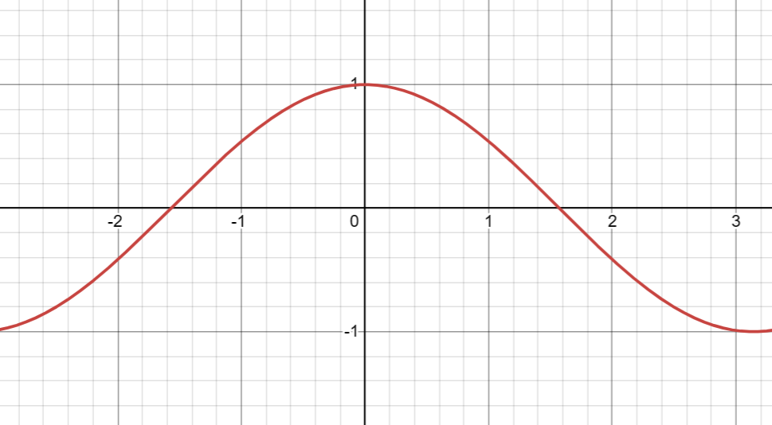
当h趋向0的时候，cosh的值是从两边趋向1的，就是说，这个h拼了命也是比1小的，既然这样1-cosh拼了命也是比0大的（听不懂算了，找部电影放松一下）
$$也就是说这个 \frac {1} {2}{lim}_{h\to 0}\frac {f[0+(1-cosh)]-f(0)} {1-cosh} 指的是 \frac {1} {2}{f}^{'}_{+}(0) $$
$$既然如此\frac {1} {2}{f}^{'}_{+}(0) 存在肯定是不够推出{f}^{'}(0)存在的，必须是左右极限都存在且相等的情况下$$
B.继续凑结构
$$ {lim}_{h\to 0}\frac {f[0+(1-{e}^{h})]-f(0)} {1-{e}^{h}}\cdot \frac {1-{e}^{h}} {h} $$
看出来了吧，我其实啥也没干，就是在凑结构吧了，死皮赖脸的凑，别人不喜欢我？那我就凑到喜欢为止(现实中别这样，挺伤风败俗的，都被你追，还有啥汤留给我啊)，好了，正经事不说了，别说你不知道后面那个等价你都不知道等价于谁。
$$ -{lim}_{h\to 0}\frac {f[0+(1-{e}^{h})]-f(0)} {1-{e}^{h}} $$
$$不是你真的看不出来 1-{e}^{h}=-({e}^{h}-1)\sim -h 是吧😡😡😡😡$$
$$ -{lim}_{h\to 0}\frac {f[0+(1-{e}^{h})]-f(0)} {1-{e}^{h}} 指的就是 -f'(0) $$
$$为啥没有分左右了，其实也分了，我们看 {e}^{h} 图像$$
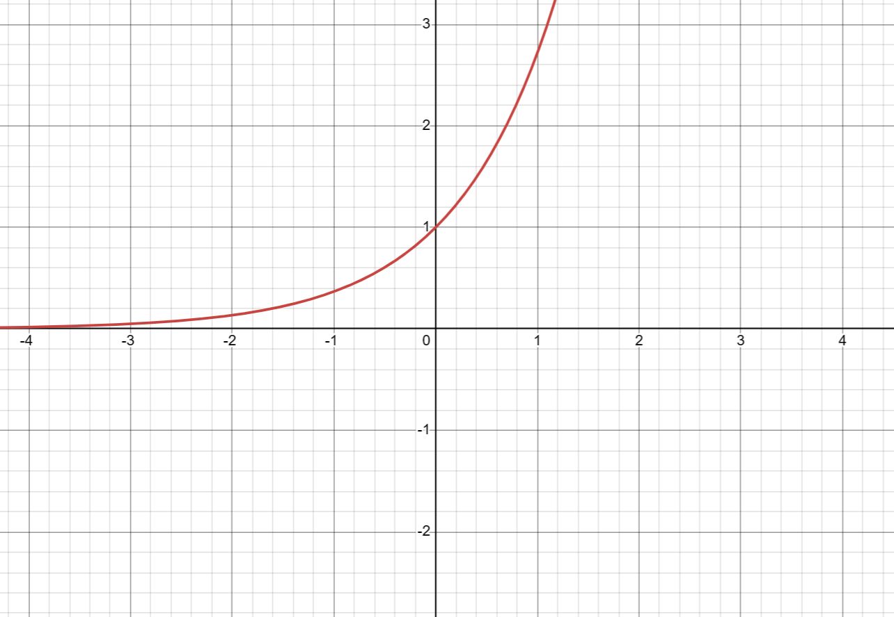
看到没，在趋向0的时候，图像是一个上面>1，一个是下面<1的因此左右都兼顾了
因此答案就是B，它自己说了导数存在，那不就是存在了
我们再看C
$$ {lim}_{h\to 0}\frac {f(0+h-sinh)-f(0)} {h-sinh}\cdot \frac {h-sinh} {{h}^{2}} $$
继续等价化简
$$ {lim}_{h\to 0}\frac {f(0+h-sinh)-f(0)} {h-sinh}\cdot \frac {\frac {1} {2}{h}^{3}} {{h}^{2}} $$
ok，这个时候，尼你估计懵逼了，说好的完美消去的呢，怎么还留下一个孤独的h，是那么的碍眼啊啊啊啊啊，我们知道当h趋向0的时候后面那个式子，分子是比分母高阶的无穷小，其结果是0
现在这个式子就有意思了【0乘上一坨】题目是这整个是存在的，0乘存在肯定是存在，0乘不存在呢？不好说吧，可能存在，也能不存在。所以这是推不出题目要求在0处导数的
D，我们来分析一下，还是凑，凑凑更健康
停！这个时候，有人就懵了，两个抽象函数，怎么凑啊，这相当于两个动点啊，一些人可能会这样
$$ {lim}_{h\to 0}\frac {f(2h)-f(h)} {2h-h} $$
用了，导数的计算型定义，很好，但是这样你求的是什么？两个不断变化的动点求一个0处定点的导数是否存在是不现实的，那怎么办，只能是动-静求静。如果两个动就分别减静求静
$$ {lim}_{h\to 0}[2\frac {f(0+2h)-f(0)} {2h}-\frac {f(0+h)-f(0)} {h}] $$
我们分别看看，不拆，就是单纯看看
$$前面{lim}_{h\to 0}2\frac {f(0+2h)-f(0)} {2h}=2f'(0) 这没问题吧，代表的就是在0处的导数$$
$$后面 {lim}_{h\to 0}\frac {f(0+h)-f(0)} {h}=f'(0) 这也没有问题，也是在0处的导数值$$
那问题来了，两个导数值相减的结果，题目给的是存在，那两个单独的是否存在呢？
存在+-存在=存在
不存在+-不存在=存在
所以也不能推出题目要求的在0处导数存在
真累啊，我们来总结一下
∃±∃=∃
∃±不∃=不∃
不∃±不∃=未知
∃×∃=∃
∃×不∃=未知
不∃×不∃=未知
当然了，你把∃(存在)换成连续，也是适用的
这道题，十分考究导数的推广定义的一凑二分析，运用∃的有关知识判断选项的正确性
复合函数、隐函数、分段函数、反函数、参数方程、高阶导数，总之就是各种求导
【复合函数】先对中间变量求导结果乘上再对自变量求导结果
我们先来了解复合函数
$$ \frac {dy} {dx}=\frac {dy} {du}\cdot \frac {du} {dx} $$
在上面的式子中，y是因变量，u是中间变量，x是自变量，什么是自变量，什么因变量？自变量是自己变动然后引起别的一个有关系的变量变化，这个被引起的就是因变量
$$ f'(x)=\frac {dy} {dx} $$
上面这个式子的左边会读吧？f(x)对x求导，也就是y对x求导。
$$ \frac {dy} {du}这个式子就是y对u求导 $$
$$ \frac {du} {dx}这个式子就是u对x求导 $$
【辨析】看看下面哪个是对中间变量求导，哪个是对自变量求导
$$ f'({x}^{4})=\frac {df({x}^{4})} {d{x}^{4}} $$
看分母，是对x的4次方求导，当然是中间变量
$$ [f({x}^{4})]'=\frac {df({x}^{4})} {dx} $$
看分母是对x求导，所以是对自变量求导
【一元隐函数】方程两边同时对x求导，并把y看成是含x的函数
说实话，方法讲的很明白了，还是不明白，那就上个例题
$$ 例：已知函数y=y(x)由方程{x}^{2}+xy+{y}^{3}=3确定，则y''(1)=\_ \_ \_ \_ \_ \_ $$
那就来嘛，两边同时对x求导
$$ 2x+y+xy'+3{y}^{2}\cdot y'=0 $$
注意y相当于是x的复合函数，求导就按复合函数求导来，我们要算二阶导，所以我们再两边同时再求一次导
$$ 2+y'+y'+xy''+6yy'+3{y}^{2}\cdot y''=0 $$
这个时候，题目给的是求x=1处的二阶导，我们把x=1代入
$$ 2+y'+y'+y''+6yy'+3{y}^{2}\cdot y''=0 $$
我们再化简
$$ 2+(6y+2)y'+(3{y}^{2}+1)y''=0 $$
到这一步咋办，我们求不出来y的二阶导啊，因为还有y和y的一阶导我们都不得知啊，其实我们可以将x带入题目给的方程，也就是只含y的方程求出y的值，然后再将x，y代入到我们只含y的一阶导的方程中求出y的一阶导就完事了，挺巧妙的，像玩游戏一样
我们代入题目给的方程
$$ 1+y+{y}^{3}=3\to y=1 $$
我们将x，y导入我们只求了一次导的方程中
$$ 2+1+y'+3y'=0\to y'=-\frac {3} {4} $$
再将一切导入我们求了两次导的方程求出y的二阶导
$$ 2+8\cdot (-\frac {3} {4})+4y''=0\to y''=1 $$
完结撒花🎆🎆🎆
【参数方程确定函数求导】
$$ \frac {dy} {dx}=\frac {\frac {dy} {dt}} {\frac {dx} {dt}}=\frac {y'(t)} {x'(t)} $$
$$ \frac {{d}^{2}y} {d{x}^{2}}=\frac {d(\frac {dy} {dx})} {dx}=\frac {d(\frac {dy} {dx})} {dt}\cdot \frac {1} {\frac {dx} {dt}} $$
参数方程的一阶导好说，就是y对t求导比上x对t求导就完事了，别和我说y对t求导到底是什么意思。我真想扇你，学习囫囵吞枣是吧，那类比呗，f(x) 求导就是y对x求导，就是把x当成未知数呗，y是含x的式子整体求导的结果
参数方程的二阶导，就是下面那个式子，你得学会接受这样的式子，以后经常会看见这样的式子，而不是f''()这样给你表明是二阶导，其实也很好理解啊，我们来看
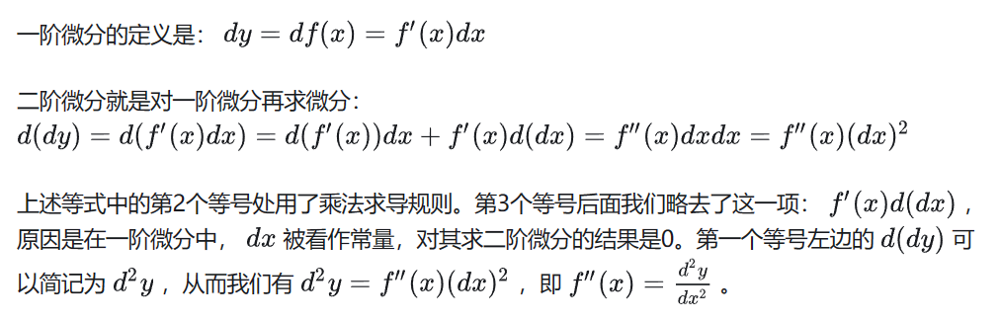
没看懂？没关系，我也没有，死记硬背吧，反正y是被d(微分)两次，x是x被两次
回归正题，参数方程的二阶导，是在一阶导的基础上，一阶导再对t求导，然后再乘上x对t求导的倒数
跟我一起念咒语：一阶导再对t求导，然后再乘上x对t求导的倒数
跟我一起念咒语：一阶导再对t求导，然后再乘上x对t求导的倒数
跟我一起念咒语：一阶导再对t求导，然后再乘上x对t求导的倒数
over,没什么难度。
【分段函数求导】分段点上用定义(求此点左右极限，并且左右极限相等)，分段点外直接求
接下来这个很重要，就是真分式和假分式的转换
真分式：分母次方比分子大
假分式：分母次方比分子小
有理分式求导或者积分用真分式
怎么化？我们用例子来说明
$$ \frac {{x}^{4}} {x+4} $$
$$ \frac {{x}^{3}(x+4)-4{x}^{3}} {x+4} $$
$$ \frac {{x}^{3}(x+4)-4{x}^{2}(x+4)+16{x}^{2}} {x+4} $$
$$ \frac {{x}^{3}(x+4)-4{x}^{2}(x+4)+16x(x+4)-54x} {x+4} $$
$$ \frac {{x}^{3}(x+4)-4{x}^{2}(x+4)+16x(x+4)-54(x+4)+216} {x+4} $$
$$ {x}^{3}-4{x}^{2}+16x-54+\frac {216} {x+4} $$
够清晰明了吧，万能的，你自己随便改，分子分母再化，一样可以
凑微分的本质
又被你赚啦，这个部分对你以后做积分题有巨大的帮助啊！！！🫠🫠
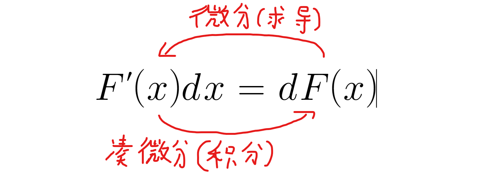
$$ dsinx\, =\, cosxdx $$
$$ dx\, =\, \frac {1} {a}dax $$
$$ -\frac {1} {{x}^{2}}dx\, =\, d\frac {1} {x} $$
相信你也看出来了，向前微分求导，比较符合我们的胃口，向后面凑微分(积分)比较反人类，但是这就是我们拉开差距的地方！(好啦，我又不是你的考研导师)
所以我要说的难点就是积分，这没办法，只有你慢慢积累
微分的有关问题
导数的微分学应用
-
October Oct, 十月 Branding
1.定义
2.待续
我们来看个图像，图像上有个曲线
0问你个问题：怎么求这个曲边梯形的面积
想不出来，没关系，我们可以用累加的方式，看下图
0我们暂且把每一小块的面积记为S
$$ \sum ^{n}_{i=1} {{S}_{i}}={S}_{1}+{S}_{2}+...+{S}_{n} $$
我们知道，每一块的面积也就是每一个矩形的面积是长×宽，也就是这个矩形宽的两边任意一个端点的函数值（长），以及x轴上的极小的宽
$$ {S}_{曲}=\sum ^{n}_{i=1} {f({g}_{i})∆{x}_{i}} $$
$$我们知道∆{x}_{i}其实就是d{x}_{i}，因为d的本意就是微分，∆的本意也是很小的一段差距$$
$$ \int ^{b}_{a} {f(x)dx} $$
相信你也看出来了，定积分的符号的本质是求和符号，而不是不定积分加上上下限的结果
我们把图形切成一小块一小块，试想一下，如果我们切的足够小，我们的切块在曲线上的边是不是就可以看成直线
我单独把切的很小的一块放大给你看
0网页制作量巨大，很多图形画的很难，并且达不到效果，所以我放一张图，看下图
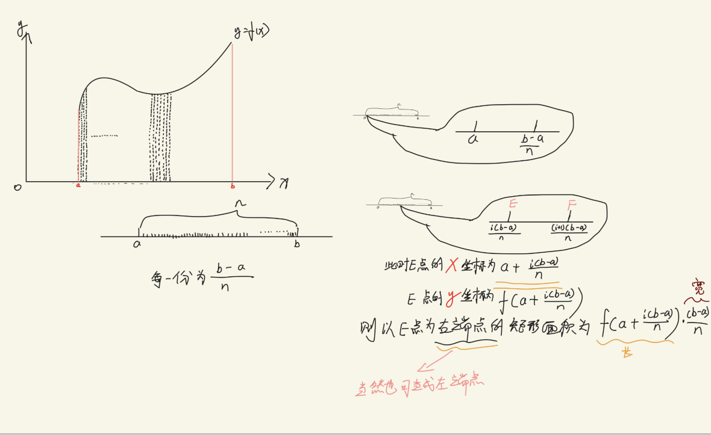
这张图本质是在探索面积的求法，面积的值无非就是和长宽有关，所以无非就是在探索长宽的值是怎么求的
a和b是已知数，在坐标上的已知点，既然我们要把a到b分为n块，那么每一小块不就是(b-a)/n
这是什么，这是我们要求的宽，因为每一个矩形的宽都是一样的，但是问题来了，曲线意味着，我们的高每一块都不是一样的
求高也不难，不就是求出横坐标，代进函数不就是高了，但是你别傻乎乎就把(b-a)/n代进去就完事了
横坐标应该是以a为基础上加上第几块就乘上多少个(b-a)/n
当然了，既然是矩形，宽也就是左右两点的函数值都可以成为高，所以选左，选右都可以成为你的高
$$ 梯形面积S={lim}_{n\to ∞}\sum ^{n}_{i=1} {\frac {b-a} {n}}f(a+\frac {b-a} {n}\cdot i)\leftrightarrow \int ^{b}_{a} {f(x)dx} $$
这个公式没有问题吧？就是每一块长乘宽求其面积再总和起来，然后就是等同于求积分限为a到b的定积分
在考研中重点考察的上下积分限为0到1
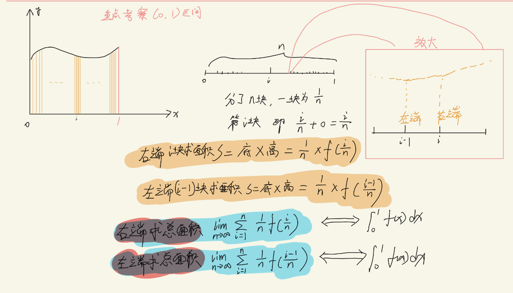
还是看不懂？算了，记公式也行，就是两个转换公式罢了
$$ {lim}_{n\to ∞}\frac {1} {n}\sum ^{n}_{i=1} {f(\frac {i} {n})}\leftrightarrow \int ^{1}_{0} {f(x)dx} $$
$$ {lim}_{n\to ∞}\frac {1} {n}\sum ^{n}_{i=1} {f(\frac {i-1} {n})}\leftrightarrow \int ^{1}_{0} {f(x)dx} $$
我们来看一道例题：
$$ {求lim}_{n\to 0}n\cdot (\frac {1} {1+{n}^{2}}+\frac {1} {{2}^{2}+{n}^{2}}+...+\frac {1} {{n}^{2}+{n}^{2}}) $$
我们来刨析一下这道题，不是我匡你，刚学的东西，套公式罢了，没什么好说的，但是就怕公式都套不上就尴尬咯
我们看多项式，是求和的形式，我们写成通项公式，加上求和的符号
$$ n\cdot {lim}_{n\to ∞}(\frac {1} {1+{n}^{2}}+\frac {1} {{2}^{2}+{n}^{2}}+...+\frac {1} {{n}^{2}+{n}^{2}}) $$
写到这里以后继续凑公式，我们的公式里面有i，i是什么？不就是每一项的值吗，就是第一项i=1，第二项i=2，等等等
$$ n\cdot {lim}_{n\to ∞}\sum ^{n}_{i=1} {\frac {1} {{i}^{2}+{n}^{2}}} $$
真的不爽啊，lim前面应该是1/n啊，现在是n，你心里面是不是一万个怒气值？哈哈哈哈哈哈哈🤣🤣🤣🤣
没事，我们变成1/n，再把n的平方给进去不就行了？
$$ \frac {1} {n}\cdot {lim}_{n\to ∞}\sum ^{n}_{i=1} {\frac {{n}^{2}} {{i}^{2}+{n}^{2}}} $$
别说这一步你看不懂，不然我怒气值就要几百万了，好了，继续
怎么继续，观察我们的公式，写的是f(i/n)也就是i/n是自变量x，好好品一下这句话
$$ \frac {1} {n}\cdot {lim}_{n\to ∞}\sum ^{n}_{i=1} {\frac {\frac {{n}^{2}} {{n}^{2}}} {\frac {{i}^{2}} {{n}^{2}}+\frac {{n}^{2}} {{n}^{2}}}} $$
$$ \frac {1} {n}\cdot {lim}_{n\to ∞}\sum ^{n}_{i=1} {\frac {1} {\frac {{i}^{2}} {{n}^{2}}+1}} $$
$$ \frac {1} {n}\cdot {lim}_{n\to ∞}\sum ^{n}_{i=1} {\frac {1} {{x}^{2}+1}} $$
$$ \int ^{1}_{0} {\frac {1} {{x}^{2}+1}}dx $$
然后用那个被苹果砸了脑袋的人的公式（牛顿-莱布尼茨（这是另一个人，不是牛顿））
$$ arctanx{|}^{1}_{0} $$
$$ \frac {π} {4} $$
定积分的几何意义
为什么说绝对面积，因为如果定积分结果是负的是不是代表面积是复数了？胡扯！我说够了
【定积分的性质】
1.
2.
3.
4.
5.
6.定积分就是个数！
7.定积分与字母的选取无关
8.
是不是觉得第六条和第七条弱爆了？中文又不是公式也不是定理，不不不，你越不在意的越会在你未来捅你一刀，并且你还不知道谁捅的你。
【比较定理】1.积分限相同，被积分函数不同，用比较定理
2.仅需比较两个被积分函数大小
3.一个部分你大，就绝对比你大
-
November Nov, 十一月 Branding
1.定义
2.待续
变限函数的定义(不是变现，给不了你钱)
不急我们来看看函数的定义：一个东西随着一个东西的改变而改变的一个式子
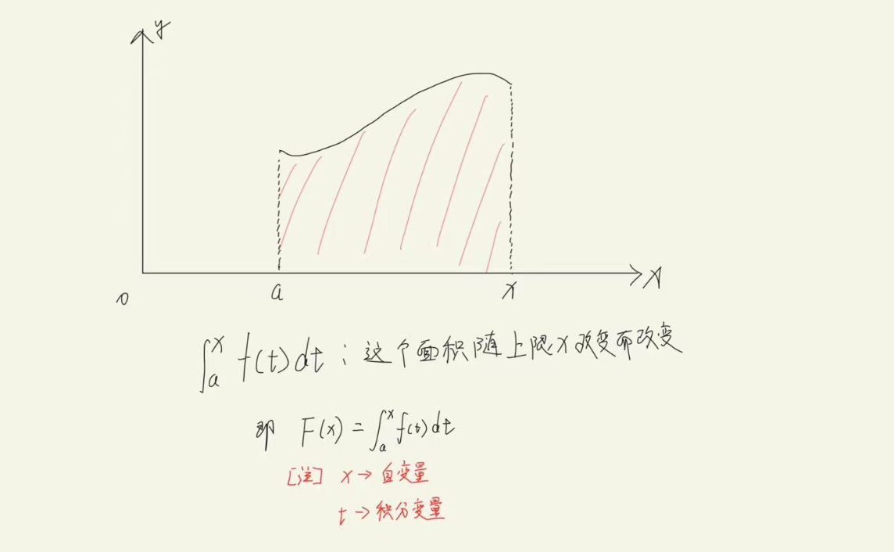
好，上面的图你看懂了没？没看懂算了，看下面(我家的小狗说它也没有看懂)
变限函数本质上是函数，请记住！函数就会有自变量与因变量，自变量的变化会造成因变量的变化
观察这个定积分，积分变量是什么还记得吗？如果不记得，那你G了，我说了没有一个字是不多余的，你就耐心体会一下，行吗
积分变量就是d()这个括号里面的东西就是积分变量，也就是说x是积分变量
但是a是未知数，也就是因变量，你看上下限都有未知数，因为定积分最终是要带进上下限的
你幻想一下，是不是就是含有a这个未知数的式子
【变限函数的求导法制】
别问我为什么定积分后面为什么是dt而不是dx，都说了，t是积分变量，x是因变量。
变上限就只求上限，变下限就只求下限(保留负号)
请一定要看这里！！！：变限函数求导是有要求的1.被积分函数要连续2.标准型
被积分函数就是f(t)
标准型我一会讲
当f(t)中不含x的时候就是标准型
但是有怎么办？1.换元2.如果x与被积分函数是乘法的时候，提到积分限外，利用乘法求导来求